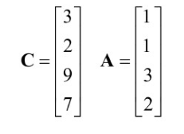
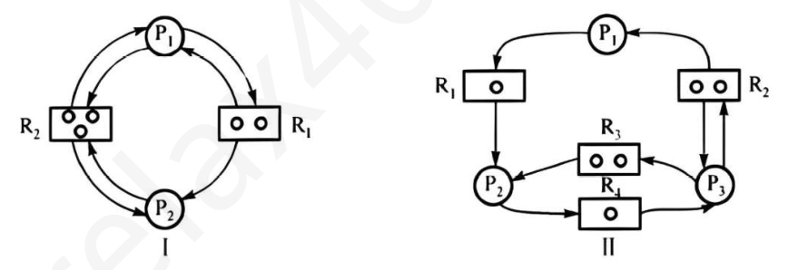
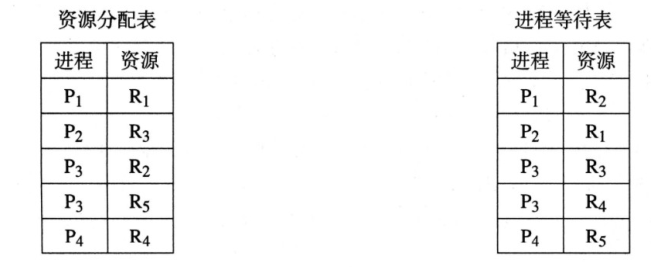

第 121 题
考虑一个由4 个进程和一个单独资源组成的系统，当前的最大需求矩阵和分配矩阵如下：对于安全状态，需要的最小剩余资源数目是（）

A． 1 B． 2 C． 3 D． 5 答案与解析 答案：C
依次用P1~P4 来表示4 个进程。从矩阵可以看出，4 个进程还需要的资源数目为2、1、6、5，按所需资源数目从小到大排列，即P2、P1、P4、P3，这就是所需最小资源数目的执行顺序。设有x 个可用资源。当x≥1 时，P2 可以执行完成，并释放占用资源，此时资源数为x+1。当x+1≥2 时，P1 可以执行完成，并释放占用资源，此时资源数为x+2。当x+2≥5时，P4可以执行完成，并释放占用资源，此时资源数为x+4。当x+4≥6 时，P3 可以执行完成，并释放占用资源，此时资源数为(忽略)。剩下的，就是求解这个简单的方程组，得出x>3.
教材第 143 页 第 122 题
下列关于死锁避免和死锁检测的说法中，不正确的是（ ）
A． 死锁避免会同一时间请求所有资源，而死锁检测不会 B． 死锁避免需要进程运行所需资源总量信息，而死锁检测不需要 C． 死锁避免不会给可能导致死锁的进程分配资源，而死锁检测会 D． 死锁避免会去评估分配资源的风险，而死锁检测不会 答案与解析 答案：A
同一时间请求所有资源破坏了死锁产生的请求和保持条件，属于死锁预防的策略，A 错误；死锁避免通过对资源分配的风险评估来决定是否为进程分配资源，需要收集进程运行所需资源总量信息，而死锁检测允许死锁的发生，会给可能导致死锁的进程分配资源，B、C、D 正确。
教材第 143 页 第 123 题
下列关于资源分配图的叙述中，正确的是（ ）。
A． 资源分配图出现了环路，说明一定会产生死锁 B． 资源分配图没有环路，说明一定不会产生死锁 C． 资源分配图没有环路，也可能产生死锁 D． 每个进程结点至少有一条请求边，说明一定会产生死锁 答案与解析 答案：B
资源分配图没有环路，无法产生循环等待，不满足死锁产生的必要条件，一定不会产生死锁，故B 正确，C 错误。资源分配图出现了环路，不一定会产生死锁；资源分配图不可完全简化，才是死锁，A，D 错误。
教材第 143 页 第 124 题
利用死锁定理简化下列进程资源图，则处于死锁状态的是（ ）

A． Ⅰ B． Ⅱ C． Ⅰ和Ⅱ D． 都不处于死锁状态 答案与解析 答案：B
根据死锁定理，首先需要找出既不阻塞又非孤点的进程。对于图Ⅰ，由于资源R2 已分配了2 个，还剩一个空闲的R2，可以满足进程P2的需求。P2运行结束后，释放一个资源R1 和两个资源R2，可以满足P1 进程的需求，从而系统的资源分配图可以完全简化，不处于死锁状态。对于图Ⅱ，P1 需要资源R1，但是唯一一个资源R1，已分配给P2；同理，P2 需要资源R4，而R4资源也只有一个且已经分配给了P3；而P3还需要一个R2资源，但是两个R2资源都已经分配完毕了，所以P1、P2、P3都处于阻塞状态，系统中不存在既不阻塞又不是孤点的进程，所以系统工处于死锁状态。注意：在进程资源图中，P->R 表示进程正在请求资源，R->P 表示资源已被分配给进程(资源只能是被动的)。
教材第 143 页 第 125 题
某一系统在某时刻的资源分配表和进程等待表如下表所示，每种资源都独一无二、无法共享且无法剥夺，则下列说法中正确的是（）。

A． 系统中不存在死锁 B． 系统中存在死锁，且终止任意一个进程都可以解除死锁 C． 系统中存在死锁，但终止任意一个进程不一定能解除死锁 D． 无法判断系统中是否存在死锁 答案与解析 答案：C
画出系统当前的资源分配图，如果资源分配图包含了环路，且每种资源只有一个实例，那么系统中存在一个死锁。所以A、D 错误；若终止进程P1，释放其占有的R1，P3、P4 仍然存在回路，所以B 错误。因此选C。
教材第 143 页 第 126 题
下列关于死锁解除策略的叙述中，错误的是（ ）
A． 最简单直接的死锁解除方法是强制终止系统中的所有死锁进程，但这可能导致已完成大量工作的进程前功尽弃。 B． 采用“进程回退”策略时，系统将使一个或多个死锁进程回退到足以避免死锁的某个先前状态 （检查点），但这要求系统记录进程的历史状态信息。 C． 剥夺资源是常用的死锁解除方法之一，即从一个或多个死锁进程中抢占某些资源，并将这些资源分配给其他死锁进程，但选择剥夺哪些资源和哪个进程的资源是一个复杂的问题。 D． 终止死锁进程时，选择优先级最低的死锁进程予以终止，可以保证系统为解除死锁付出的代价最小。 答案与解析 答案：D
A 正确，终止所有死锁进程是一种简单粗暴但能有效解除死锁的方法。它的缺点是代价较大，因为所有死锁进程的工作都会丢失，包括那些可能已经运行了很长时间或接近完成的进程。 B 正确，进程回退是一种尝试恢复到死锁发生前某个安全状态的方法。系统需要周期性地为进程设置检查点，记录进程的状态和资源分配情况。当死锁发生时，可以将某些进程回退到最近的检查点，释放自该检查点以来获得的资源，从而可能打破死锁。这需要系统支持检查点机制。 C 正确，剥夺资源是指从某些死锁进程中强行收回其已分配的资源，并将这些资源分配给其他死锁进程，以打破循环等待。选择剥夺哪个进程的哪些资源以最小化代价是一个复杂的问题，需要考虑进程优先级、已执行时间、已占用资源类型和数量等因素。 D 错误，付出代价的衡量标准是多方面的，例如，该进程已运行的时间、已使用的资源、完成剩余工作所需的时间、进程的重要性（可能与优先级不完全一致）、该进程是交互式还是批处理式等。一个优先级最低的进程可能已经快要完成其任务，或者持有很多关键资源，终止它可能比终止一个优先级稍高但刚开始运行的进程代价更大。因此，选择代价最小的终止进程是一个复杂的决策过程，并非简单地看优先级。
教材第 144 页 第 127 题
某系统有m 个同类资源供n 个进程共享，若每个进程最多申请k 个资源(k>1)，采用银行家算法分配资源，为保证系统不发生死锁，则各进程的最大需求量之和应（）
A． 等于m B． 等于m+n C． 小于m+n D． 大于m+n 答案与解析 答案：C
n 个进程，分别需要N1, N2, ...Nn 个资源，那么总的所需资源𝑠𝑢𝑚= 𝑁1 + 𝑁2 + 𝑛𝑁𝑖，现在可用资源是m 个，最坏的情况是每个进程都分配了Ni-1 个，也就是再分配 . . . + 𝑁𝑛= 𝑖=1一个就可以分配完毕，使用完归还。此时每个进程都差1个的话，那么当前总的已经分配的就是𝑛𝑛𝑁𝑖−𝑛= 𝑠𝑢𝑚−𝑛。现在只需要再多出1个就能保证任意情况下都不会 （𝑁𝑖−1）= 𝑖=1𝑖=1发生死锁，那么𝑚>= 𝑠𝑢𝑚−𝑛+ 1，整理可得𝑠𝑢𝑚<= 𝑛+ 𝑚−1，也就是选C。
教材第 144 页 第 128 题
下列关于死锁的预防、避免、检测和解除的叙述中，正确的有（ ）
A． 仅Ⅰ、Ⅱ B． 仅Ⅲ、Ⅳ C． 仅Ⅱ、Ⅲ、Ⅳ D． Ⅰ、Ⅱ、Ⅲ、Ⅳ 答案与解析 答案：B
Ⅲ、Ⅳ正确。 Ⅰ错误，资源的有序分配策略（即对资源类型进行线性排序，进程必须按序号递增的顺序申请资源）主要是为了破坏循环等待条件。它并不直接作用于请求和保持条件。破坏请求和保持条件通常采用一次性申请所有资源或在得不到新资源时释放已持有资源等策略。 Ⅱ错误，银行家算法是一种死锁避免算法。它通过在每次资源分配前进行安全性检查，确保系统不会进入不安全状态，从而避免发生死锁。它并不直接破坏死锁的四个必要条件中的任何一个，而是通过动态地控制资源分配来避免形成可能导致死锁的局面。 Ⅲ正确，死锁的发生首先是因为系统中的资源数量有限，不足以满足所有并发进程的需求（资源分配不足）。其次，即使资源不足，如果进程请求和释放资源的顺序得当，也未必会发生死锁。只有当多个进程对资源的请求和保持形成一种特定的循环等待关系，即进程推进顺序非法（导致了循环等待条件），才会最终导致死锁。 Ⅳ正确，进程回退是一种死锁解除策略。当检测到死锁后，系统选择一个或多个死锁进程，使其回退到足以避免死锁的某个先前状态（检查点或还原点）。这要求系统能够记录进程在不同时间点的状态信息（历史信息）并设置还原点，以便能够进行回退操作。 【速对答案】 BDDDBDBBCDCCADCBACCBAADBBBCCCBDABABBBBCDDCCBCBDDDABCBDDBBDCDCBDCADCBAA
教材第 144 页